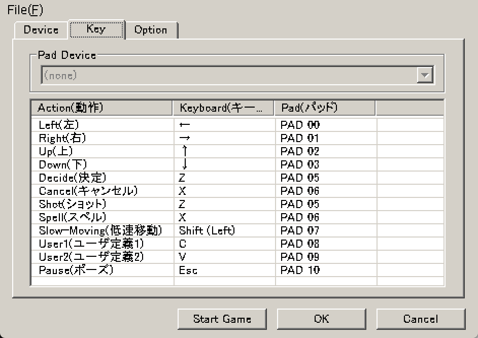

Sparen's Danmakufu ph3 Tutorials Lesson 32 - Using Virtual Keys and Mouse Input
Table of Contents
Part 1: What will be covered in this lesson?
In this lesson, we will cover Danmakufu's Input Functions, including key states, key and virtual key IDs, and mouse-based functions. This lesson expects that the reader has an understanding of what replays are and is familiar with the Danmakufu playing field. This lesson expects that the reader is aware of Danmakufu's built-in configuration, as we will be discussing virtual keys and virtual key mapping.
Part 2: What are Keys and Key States?
Keys are pretty much any type of on/off input - keyboard presses, controller buttons, etc. In Danmakufu, constants exist for all standard Windows keyboard keys (see the Input Functions).
There are four states any key can be in at any time - KEY_FREE, KEY_PUSH, KEY_HOLD, KEY_PULL. A key will only be one one state at a time.
KEY_FREE is the basic state where a key is not being pressed.
The next three states are in order when you press a key. First, KEY_PUSH occurs when the player presses downwards on the key. Once the key has been pressed, the key's state is KEY_HOLD, which lasts as long as the key is pressed. Once the key is released, the key's state turns to KEY_PULL briefly before returning to KEY_FREE.
In the next lesson, where we will build a dialogue system, we will go further in depth with regards to how these four states are used and how to choose which one to utilize for a given objective.
Part 3: What are Virtual Keys and why are they useful?
Now we've discussed regular keys and key states. However, we've been mentioning Virtual Keys for a while. What are these, and why use them?
There are three key differences between Virtual Keys and regular keys. First, Virtual Keys do not correspond to a physical key like regular keys - instead, they are an abstraction that allows *any* key to be a specified virtual key. Second, they can correspond to any number of keys, and multiple virtual keys can correspond to a single physical key. And third, Virtual Key presses are saved to replays, while regular key presses are not.
Above is a screenshot of the Danmakufu Config Key tab. For each action, there are two associated keys that are assigned to the virtual key. Virtual keys exist for the four movement directions (VK_LEFT, VK_RIGHT, VK_UP, and VK_DOWN), menu operations (VK_OK, VK_CANCEL), gameplay (VK_SHOT, VK_BOMB, VK_SPELL, VK_SLOWMOVE), user defined actions (VK_USER1, VK_USER2), and for pause (VK_PAUSE).
Note that by default, the X key is used for both VK_BOMB/VK_SPELL (which are just aliases) and VK_CANCEL - something similar happens for the Z key. As you can see, multiple virtual keys can access the same key press. However, the power here is that you could technically map cancel to be a different set of physical keys than spell/bomb, or remap the arrow keys to WASD.
However, to highlight the importance of virtual keys, let's assume for a moment that we didn't have them.
Let's say, for sake of example, that we've been working on a platformer. It uses space for jump, WASD for movement, K for attacking, and M for opening a menu. The developers have hardcoded every single key in the location where it is used. Let's say that enemies behave differently when the player is attacking and that there are 20 different kinds of enemies.
Now let's say that players find that they're hitting K when they want to hit M instead. They want to be able to use a different key for attacking - for example, P. Without virtual keys, the developers need to find all occurrences where the K key was used and switch to P.
Alternatively, let's say that someone wants to play on a currently unsupported controller. To access the controller inputs, the devs need to import a library and add controller buttons to every statement a la Input.GetKeyDown(KeyCode.M) | *insert custom controller key access*. Now let's say that we have 20 different controllers to support. Suddenly, adding a new key press handler becomes a mess.
Virtual Keys to the rescue! In the game logic, you can just check if the virtual key has been pressed. It doesn't matter which keys are mapped to the virtual key, it doesn't matter which controller buttons are mapped to the virtual key, and it doesn't matter what the player has chosen to map the virtual keys to - the game logic doesn't need to know, and this makes the code much simpler.
But now back to Danmakufu. How do you access key states in Danmakufu?
Part 4: What are Danmakufu's Key Input Functions?
In this section, we will cover Danmakufu's key-based input functions.
GetKeyState() and GetVirtualKeyState() behave as you would expect. Provided with a key or virtual key, they will return the key state - KEY_FREE, KEY_HOLD, etc.
Next, SetVirtualKeyState(). This function allows you to set the state of the specified virtual key for the current frame (after which it will return to its actual state). This function may have niche uses depending on the scenario.
To add a virtual key, use AddVirtualKey(). This takes three parameters - the name of your new key as a string, the key const for the target key, and the keypad const for the target keypad key. If you don't want to use the keypad, use KEY_INVALID. The main quirk with this function is that if you use it with a key already mapped in Danmakufu's config, it will replace that definition for the remainder of that script. You will need to re-add the definition of the original key in order to maintain its usage for both virtual keys. We recommend only using AddVirtualKey to add additional functionality that is unrelated to core gameplay, such as in menus or in custom setups. Danmakufu provides two user virtual keys for use in your scripts, so please make use of those two first.
Finally, we have AddReplayTargetVirtualKey(), which, when used with an existing key ID, registers the virtual key to replays. This is used for newly created virtual keys that need to be tracked in replays.
As an additional note, Danmakufu provides SetSkipModeKey(). This function is used to either remap the fast-forward/skip mode key (which notably is NOT saved in replays) or to disable it. In most games, it is customary to enable it only in replays. How you handle this is up to you.
Part 5: How do I use the mouse position in Danmakufu?
We'll close off this guide by talking about the mouse. The mouse has three buttons - MOUSE_LEFT, MOUSE_MIDDLE, and MOUSE_RIGHT. GetMouseState() behaves similarly to GetKeyState but works for mouse buttons.
Besides these, there are three other functions that return information from the mouse. These are GetMouseX(), GetMouseY(), and GetMouseMoveZ(). The first two do what you'd expect and use the top left of the Danmakufu window as their (0, 0) origin. The last one uses the middle mouse scroller and notes change in position.
While it may be nice to use the mouse, there are a few things to note. First, replays do not support logging mouse inputs. Second, middle mouse rollers don't really exist on all computers anymore, so it is not recommended that you use them.
And with that, we've covered virtual keys and input functions. In the next lesson, we'll take everything we've learned with 2D sprites, text, control statements, virtual key inputs to build a dialogue library.
Summary
- Virtual Keys are an abstraction for physical keys that allow for remapping and multiple mapping
- Virtual Key states can be saved to replays while regular key states cannot
- Mouse functions are not saved to replays
Sources and External Resources
N/A